What's this?
This website is supposed to become a programming related blog-ish thing where I share my progress on
different projects or some CTF writeups in case I feel like making some. I'm not very actively working on this website
since I'm currently lacking time to do so.
The code of this website is, just like most of the things I do, completely
open source.
You may want to check out
https://demo.antricks.dev/
for some web-based things I already made. Do note though that this does not resemble what I currently do.
Most of the projects you can find there are some old code snippets I quickly wrote because I wanted to try something or I thought it was a fun idea.
As I said, I publish pretty much everything I do on GitHub though, so if you want to see my current projects, feel free to check it out!
Look mum, I'm online!
I maed dis
Here's where I flex some stuff I made
Pixelart
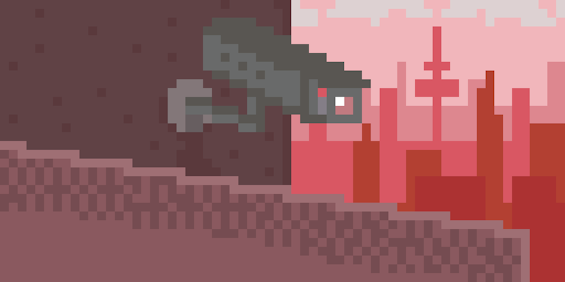
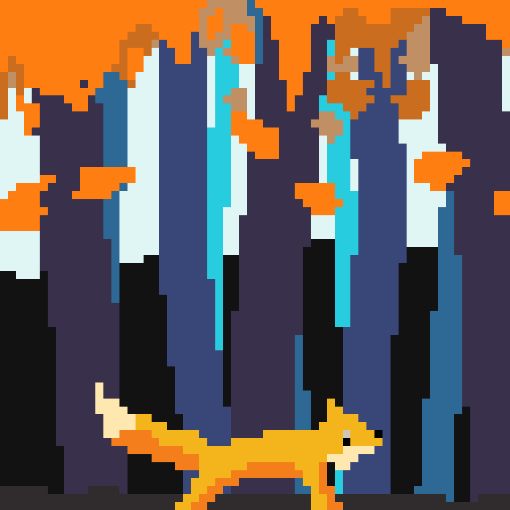
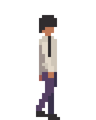
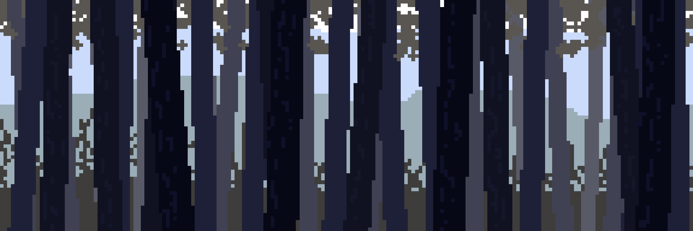
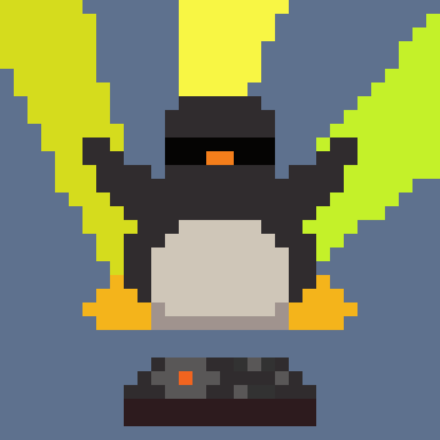
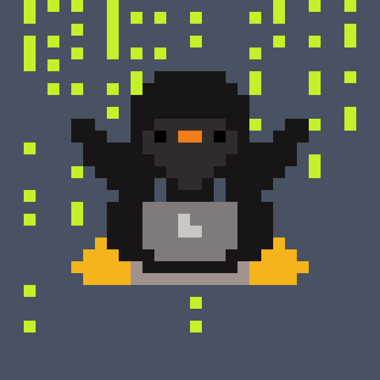
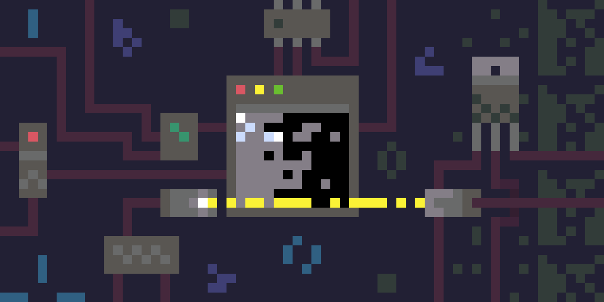
Software
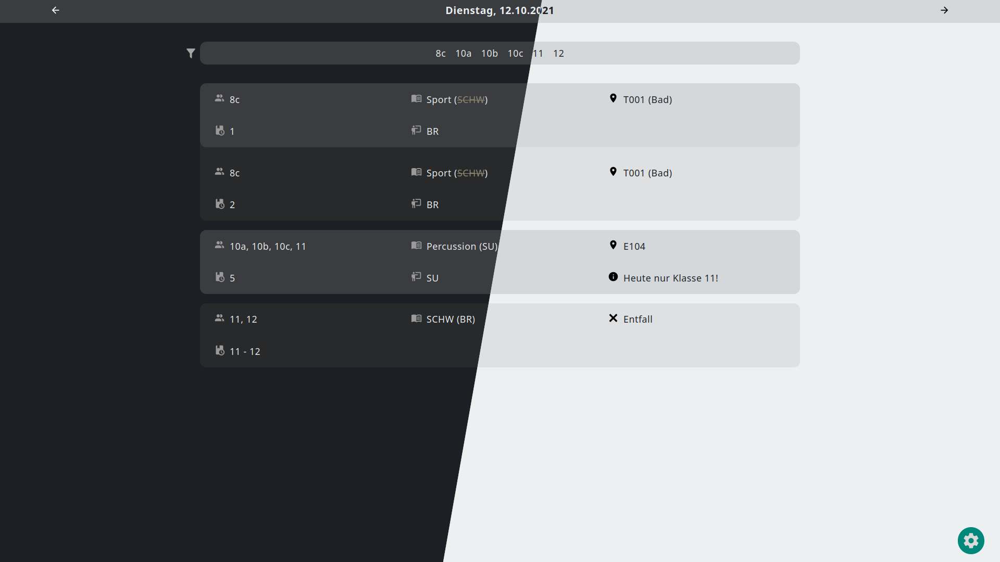
Plan-B is a substitution table working with the WebUntis API, Spyrex and I are currently primarily working on. It has a mode for students and one for teachers. Additionally it features a monitor mode that needs no interaction, so it can be opened on monitors in school hallways for example.
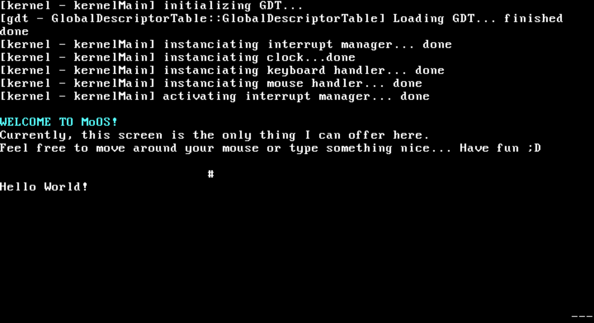
This is a screenshot of my own operating system MoOS (The name's a stupid German pun). Granted, it only runs in protected mode and only supports VMs, but at least it's something and it took me quite some effort ^^
It's based on the very, very good tutorial by Viktor Engelmann: wyoos (Here's the corresponding YouTube playlist)
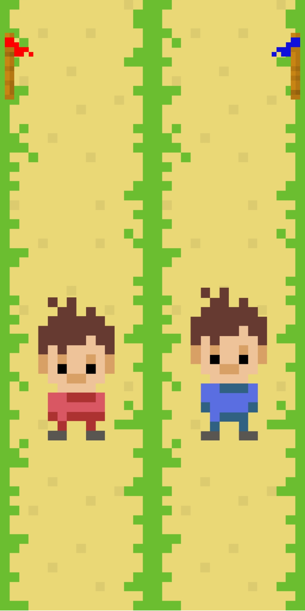
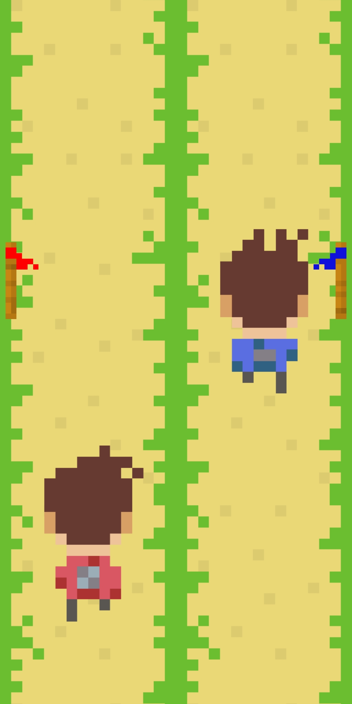
ClickRunner is a mobile game I made when I started working with Java and Android Studio. I'm not too proud of it, but it does have nostalic value for me ^^
You can play it with two players on one device. Whoever clicks faster on their side also runs faster to win the battle. I initially wanted to implement a mode where you just play against your own highscore too, but I abandoned the project before I implemented that feature. You can get it on Google Play if you want.
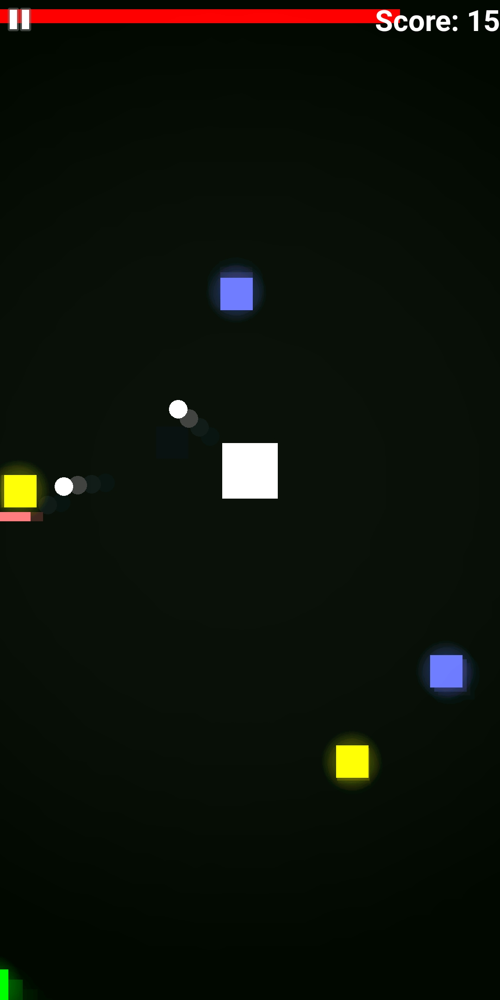
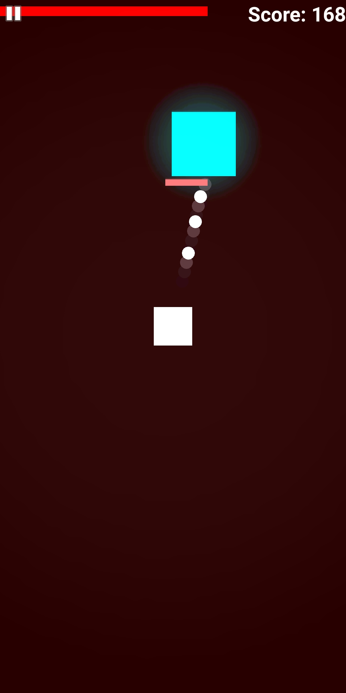
DefendIt is another mobile game also made in my early Java + Android days. Your task is to defend the square in the middle that's being attacked by other scary squares by shooting them. Unfortunately, it's currently not available on Google Play though. (Yes, yes big sad I know)
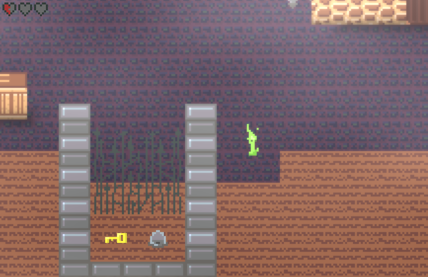
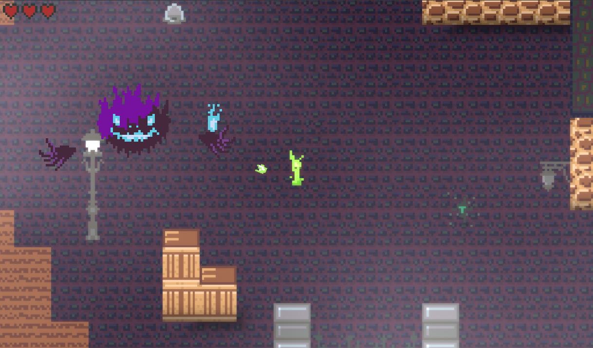
Candle is a game I started making together with Spyrex. It was planned to be a contribution for Wowie!Jam 2020 but we ran out of time and abandoned it. I personally really like this project, so I might pick it up again in the future.